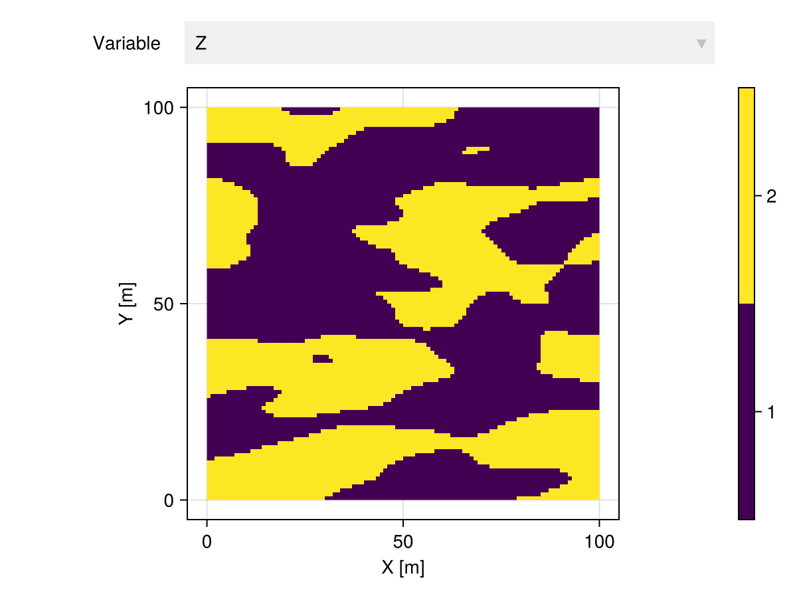
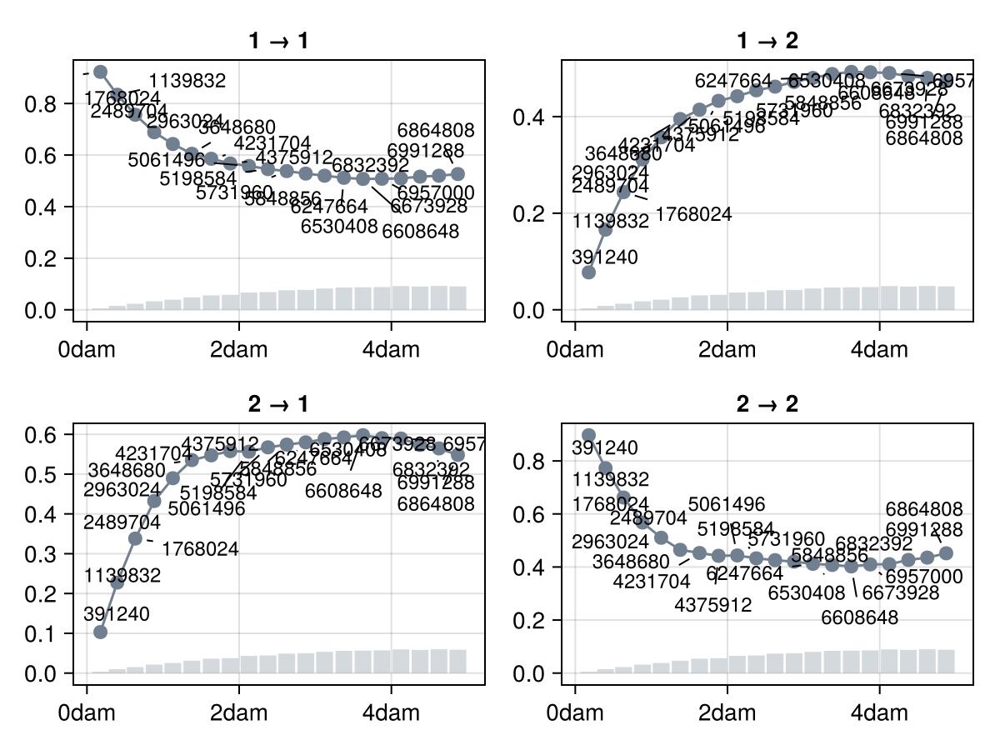
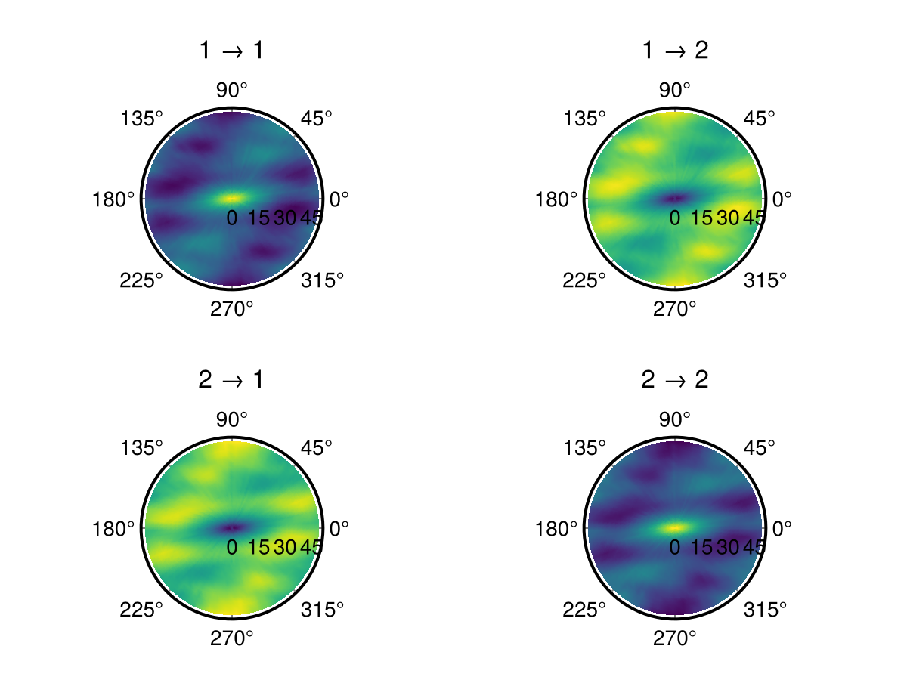
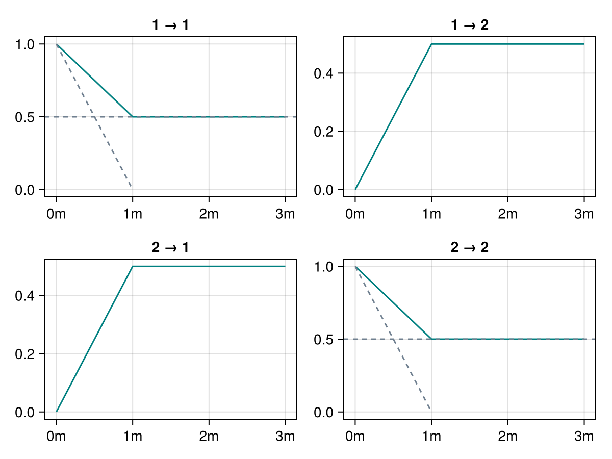
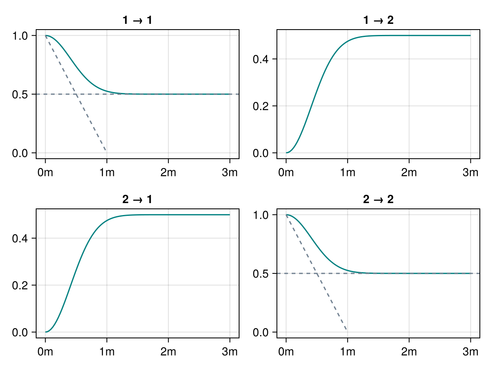
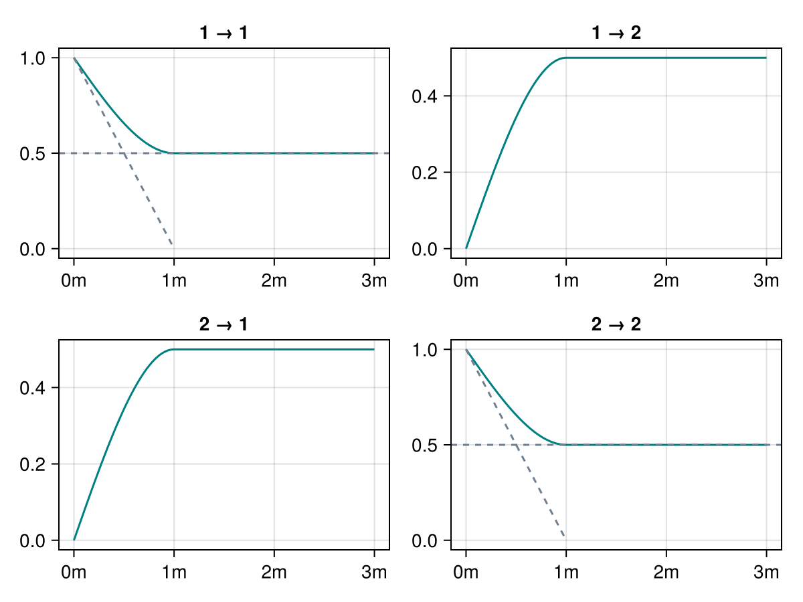
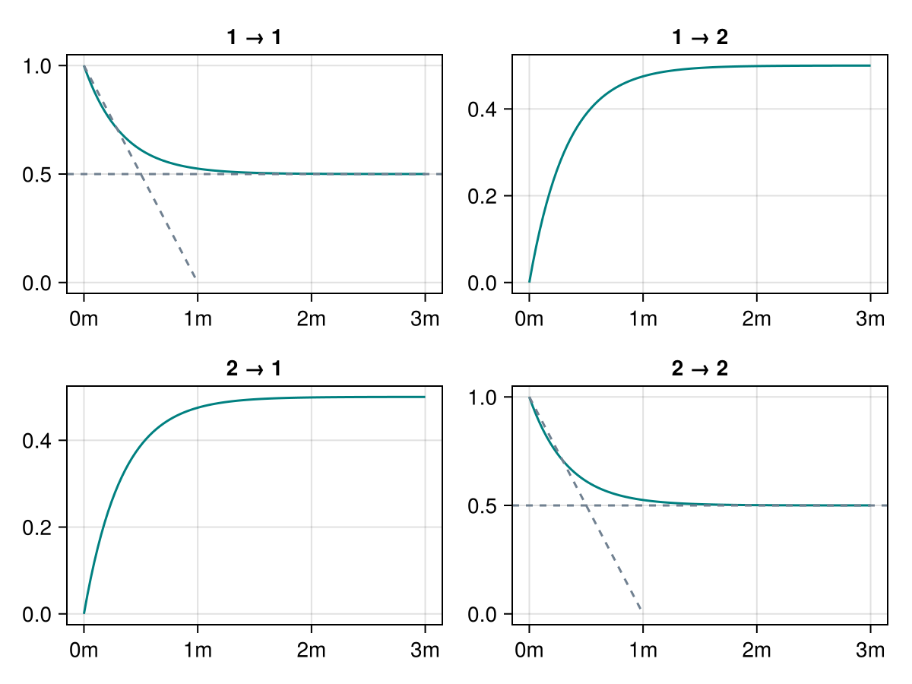
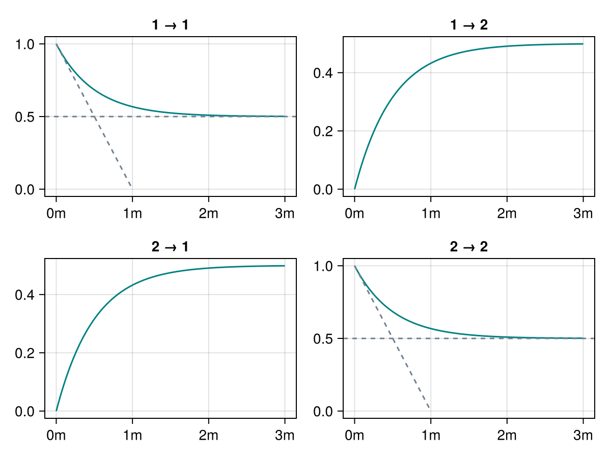
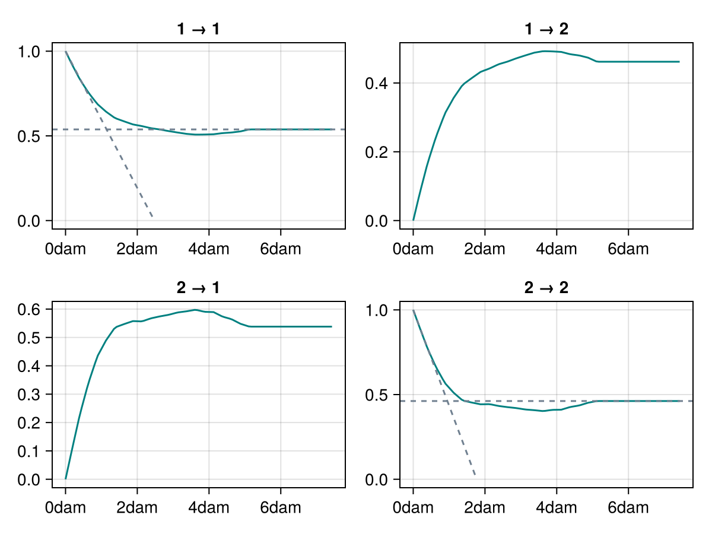

Transiograms
Empirical transiograms
Transiograms of categorical variables are matrix-valued functions $t_{ab}(h)$ that measure the transition probability from categorical value $a$ to categorical value $b$ at a given lag $h \in \R$. They are often used for the simulation of Markov processes in more than one dimension.
The Carle's estimator of the empirical transiogram is given by
\[\widehat{t_{ab}}(h) = \frac{\sum_{(i,j) \in N(h)} {I_a}_i \cdot {I_b}_j}{\sum_{(i,j) \in N(h)} {I_a}_i}\]
where $N(h) = \left\{(i,j) \mid ||\p_i - \p_j|| = h\right\}$ is the set of pairs of locations at a distance $h$, and where $I_a$ and $I_b$ are the indicator variables for categorical values (or levels) $a$ and $b$, respectively.
(Omini)directional transiograms
GeoStatsFunctions.EmpiricalTransiogram — Type
EmpiricalTransiogram(data, var; [options])Computes the empirical (a.k.a. experimental) omnidirectional transiogram for categorical variable var stored in geospatial data.
Options
- nlags - number of lags (default to
20) - maxlag - maximum lag in length units (default to 1/2 of minimum side of bounding box)
- distance - custom distance function (default to
Euclideandistance) - algorithm - accumulation algorithm (default to
:ball)
Available algorithms:
:full- loop over all pairs of points in the data:ball- loop over all points inside maximum lag ball
All implemented algorithms produce the exact same result. The :ball algorithm is considerably faster when the maximum lag is much smaller than the bounding box of the domain of the data.
See also: DirectionalTransiogram, PlanarTransiogram, EmpiricalTransiogramSurface.
References
Carle, S.F. & Fogg, G.E. 1996. Transition probability-based indicator geostatistics
Carle et al 1998. Conditional Simulation of Hydrofacies Architecture: A Transition Probability/Markov Approach
GeoStatsFunctions.DirectionalTransiogram — Function
DirectionalTransiogram(direction, data, var; dtol=1e-6u"m", [options])Computes the empirical transiogram for the categorical variable var stored in geospatial data along a given direction with band tolerance dtol in length units.
Forwards options to the underlying EmpiricalTransiogram.
GeoStatsFunctions.PlanarTransiogram — Function
PlanarTransiogram(normal, data, var; ntol=1e-6u"m", [options])Computes the empirical transiogram for the categorical variable var stored in geospatial data along a plane perpendicular to a normal direction with plane tolerance ntol in length units.
Forwards options to the underlying EmpiricalTransiogram.
Consider the following categorical image:
using GeoStatsImages
img = geostatsimage("Gaussian30x10")
Z = [z < 0 ? 1 : 2 for z in img.Z]
cat = georef((; Z=Z), img.geometry)
cat |> viewer
We can estimate the ominidirectional transiogram with
t = EmpiricalTransiogram(cat, :Z, maxlag = 50.)
funplot(t)
Empirical surfaces
GeoStatsFunctions.EmpiricalTransiogramSurface — Type
EmpiricalTransiogramSurface(data, var;
normal=Vec(0,0,1), nangs=50,
ptol=0.5u"m", dtol=0.5u"m",
[options])Given a normal direction, estimate the transiogram of variable var along all directions in the corresponding plane of variation.
Optionally, specify the tolerance ptol in length units for the plane partition, the tolerance dtol in length units for the direction partition, the number of angles nangs in the plane, and forward the options to the underlying EmpiricalTransiogram.
t = EmpiricalTransiogramSurface(cat, :Z, maxlag = 50.)
surfplot(t)
Theoretical transiograms
We provide various theoretical transiograms from the literature, which can can be combined with ellipsoid distances to model geometric anisotropy. Please check the Functions section for more details.
Linear
GeoStatsFunctions.LinearTransiogram — Type
LinearTransiogram(; range, proportions)A linear transiogram with range in length units, and categorical proportions.
LinearTransiogram(; ranges, rotation, proportions)Alternatively, use multiple ranges and rotation matrix to construct an anisotropic model.
LinearTransiogram(ball; proportions)Alternatively, use a custom metric ball.
funplot(LinearTransiogram())
Gaussian
GeoStatsFunctions.GaussianTransiogram — Type
GaussianTransiogram(; range, proportions)A Gaussian transiogram with range in length units, and categorical proportions.
GaussianTransiogram(; ranges, rotation, proportions)Alternatively, use multiple ranges and rotation matrix to construct an anisotropic model.
GaussianTransiogram(ball; proportions)Alternatively, use a custom metric ball.
funplot(GaussianTransiogram())
Spherical
GeoStatsFunctions.SphericalTransiogram — Type
SphericalTransiogram(; range, proportions)A spherical transiogram with range in length units, and categorical proportions.
SphericalTransiogram(; ranges, rotation, proportions)Alternatively, use multiple ranges and rotation matrix to construct an anisotropic model.
SphericalTransiogram(ball; proportions)Alternatively, use a custom metric ball.
funplot(SphericalTransiogram())
Exponential
GeoStatsFunctions.ExponentialTransiogram — Type
ExponentialTransiogram(; range, proportions)An exponential transiogram with range in length units, and categorical proportions.
ExponentialTransiogram(; ranges, rotation, proportions)Alternatively, use multiple ranges and rotation matrix to construct an anisotropic model.
ExponentialTransiogram(ball; proportions)Alternatively, use a custom metric ball.
funplot(ExponentialTransiogram())
MatrixExponential
GeoStatsFunctions.MatrixExponentialTransiogram — Type
MatrixExponentialTransiogram(ball, rate)A matrix-exponential transiogram with given metric ball and transition rate matrix.
MatrixExponentialTransiogram(ball; lengths, proportions)Alternatively, build transition rate matrix from nominal lengths and relative proportions.
MatrixExponentialTransiogram(rate; range)
MatrixExponentialTransiogram(rate; ranges, rotation)Alternatively, build metric ball from single range or from multiple ranges and rotation matrix.
MatrixExponentialTransiogram(; range, lengths, proportions)
MatrixExponentialTransiogram(; ranges, rotation, lengths, proportions)Alternatively, build metric ball and transition rate matrix from combination of previous parameters.
Examples
MatrixExponentialTransiogram(lengths=(3.0, 2.0, 1.0), proportions=(1/3, 1/3, 1/3))
MatrixExponentialTransiogram(ranges=(2.0, 1.0))See also CarleTransiogram.
References
Carle, S.F. & Fogg, G.E. 1996. Transition probability-based indicator geostatistics
Carle et al 1998. Conditional Simulation of Hydrofacies Architecture: A Transition Probability/Markov Approach
Notes
The final proportions of the matrix-exponential model can be different from the relative proportions specified during construction. They are also a function of the mean lengths.
funplot(MatrixExponentialTransiogram())
CarleTransiogram
GeoStatsFunctions.CarleTransiogram — Type
CarleTransiogram(ratex, ratey, ratez, ...)A transiogram with transition rate matrices ratex, ratey, ratez, ... along axes of a Cartesian coordinate reference system.
Examples
# lengths and proportions
l = (1u"m", 2u"m", 3u"m")
p = (1/3, 1/3, 1/3)
# horizontal to vertical anisotropy ratio
ratex = GeoStatsFunctions.baseratematrix(10 .* l, p)
ratey = GeoStatsFunctions.baseratematrix(10 .* l, p)
ratez = GeoStatsFunctions.baseratematrix(1 .* l, p)
# Carle's transiogram model
CarleTransiogram(ratex, ratey, ratez)See also MatrixExponentialTransiogram.
References
Carle, S.F. & Fogg, G.E. 1996. Transition probability-based indicator geostatistics
Carle et al 1998. Conditional Simulation of Hydrofacies Architecture: A Transition Probability/Markov Approach
funplot(CarleTransiogram())
PiecewiseLinear
GeoStatsFunctions.PiecewiseLinearTransiogram — Type
PiecewiseLinearTransiogram(ball, abscissas, ordinates)A piecewise-linear transiogram model with given metric ball, abscissas and matrix ordinates.
PiecewiseLinearTransiogram(abscissas, ordinates; range)
PiecewiseLinearTransiogram(abscissas, ordinates; ranges, rotation)Alternatively, build metric ball from single range or from multiple ranges and rotation matrix.
References
Li, W. & Zhang, C. 2005. [Application of Transiograms to Markov Chain Simulation and Spatial Uncertainty Assessment of Land-Cover Classes] (https://www.tandfonline.com/doi/abs/10.2747/1548-1603.42.4.297)
Li, W. & Zhang, C. 2010. Linear interpolation and joint model fitting of experimental transiograms for Markov chain simulation of categorical spatial variables
t = EmpiricalTransiogram(cat, :Z, maxlag = 50.)
τ = GeoStatsFunctions.fit(PiecewiseLinearTransiogram, t)
funplot(τ)